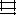

Adjust column width or decimal precision
Adjusting the column width has no effect on the width of columns in the graph; it only lets you view more or fewer digits in a column.
With the default value of 2 decimals, the number 4 entered in a cell appears in the Graph Data window box as 4.00, and the number 1.55823 entered in a cell displays as 1.56.
 Adjust the width of columns
Adjust the width of columns
 Do one of the following:
Do one of the following:-
Click the Cell Style button

, and enter a value between 0 and 20 in the Column Width text box. -
Position the pointer at the edge of the column you want to adjust. The pointer changes to a double arrow . Then drag the handle to the desired position.